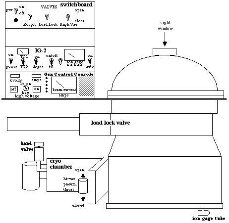
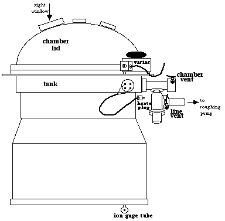
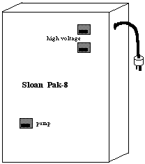
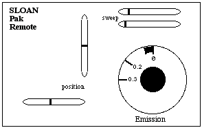

Operation Manual for
Evaporation System
in Microengineering Lab
5/25/92 Jim Deacutis
Thayer School of Engineering




1.0 Cold Start-up
1.1 Initial State and Start-up of System Instrumentation and Power:
1.1.1 In Cleanroom:
Chamber: closed and evacuated,
Gold colored hand valve at cryo chamber: Closed (fully cw)
Pneumatic pressure: black inlet valve open, wall gauge at 50 psi
Chill water valves to chamber: Open,
Switchboard for Pneumatic valves:
'Load Lock': Closed (toggle down),
'High Vac': Closed (toggle down),
'Rough': Closed (toggle down),
Switch on Valves 'Pwr'(toggle up),
IG-2 (Granville-Phillips) Vacuum Gauge:
Degas: off
Switch on Power
Toggle to TC2 (Cryo)
Variac for Substrate Heater (right of chamber):
Heater leads unplugged from Variac
Variac plugged into wall outlet
Variac knob at 'Ø'
1.1.2 In Service Corridor:
Chill water:
Valves at E-Beam (Pak-8) Power Chassis: open
Main valves (high on wall): open to deliver greater than 2 GPM
Wall panel circuit breakers:
#5 (substrate heater): Off
#35/37/39 (E-Beam Power and Roughing Pump): Off
#26/28 (Cryo Compressor): On
E-Beam (Pak-8) Power Chassis:
All (3) circuit breakers: off
X-Large Twist-lock plug: properly aligned and plugged into wall socket
Roughing Pump:
Black Twist-lock plugged into yellow-socket power cord.
Cryo compressor:
Both rocker switches ('Cold Head' and 'Compressor'): off,
If not plugged in:
Switch off wall panel circuit breaker #26/28
Aign plug and plug into single wall outlet
behind Pak-8 Chassis.
Switch on wall panel circuit breaker #26/28
1.2 Cryo Pump Start-up
Turning On Roughing Pump:
Switch on wall panel circuit breaker #35/37/39
Switch on roughing 'Pump' circuit breaker (Pak-8 Chassis lower left)
Close roughing 'Line Vent' toggle valve (behind chamber)
1.2.2 Pump down cryo chamber:
Gold colored hand valve at cryo chamber: open (ccw) about 5 turns
When TC2 reads:
not lower than 30 milliTorr (.3 x 10-2 Torr)
but not more than 50 milliTorr
Close gold colored hand valve
Wait 3 min.:
If TC2 drifts above 50 milliTorr:
Repeat '1.2.2 Pump down cryo chamber'
Turning Off Roughing Pump:
Open roughing 'Line Vent' toggle valve (behind chamber)
switch off roughing 'Pump' circuit breaker (Pak-8 Chassis lower left)
Cryo compressor:
turn on both rocker switches ('Cold Head' and 'Compressor') simultaneously,
after 30 min:
water condensation may form on cryo chamber walls
after 60 min:
No condensation or frost on cryo chamber walls.
if frost on walls, or
if condensation after 90 min:
shut-down and repair.
TC2 (cryo) reads approximately Ø milliTorr.
2.0 Loading Chamber
2.1 Switchboard Status for Pneumatic Valves:
'Rough': Closed
If loading substrates only:
'Load Lock': Closed,
'High Vac': Closed
If loading substrates and source material:
'High Vac': Closed,
'Load Lock': Open
2.2 Vent Chamber
Open 'Chamber Vent' toggle valve
Be sure that TC2 (Cryo) does not rise above 1 x 10-2 Torr
2.3 Clean chamber:
Wear:
full Cleanroom garb,
new Cleanroom latex gloves,
respirator (necessary if flaking powder airborne),
Use vacuum cleaner, and a scraping tool:
CAREFULLY clean flaking deposits from:
a) chamber walls,
b) quartz heater lamps (fragile),
c) connecting wires, etc., (do not disturb bare copper wires)
d) substrate holder, remove and clean
e) E-gun: use spatula to scrape:
hearth,
E-beam entrance way.
f) chamber floor and other fixtures.
2.4 Check and repair loose or broken wires and mechanical fixturing.
look for electrical shorts or crossed wires
(most fixturing and wiring are fragile: if it works - do not fix!)
2.5 Check Inficon thickness monitor:
To replace the crystal, clean with acetone and clean cloth:
both sides of crystal and electrical contact areas of holder,
ceramic supported spring contacts.
assemble holder with new crystal,
replace into position.
Re-check Inficon.
2.6 Prepare substrates:
Clean substrates per process flow
Mount substrates onto fixture,
Vacuum chamber as necessary.
Recharge chemical source as needed:
by adding Al slugs or,
for NiCr rod, by spinning rod feed gear (by hand)
Be sure chemical source is clean,
Load substrates,
Place quartz heater lamps behind substrates,
Be sure line of sight to hearth is not obstructed
(turn on circuit breaker #5: for illumination via variac/heater lamps)
2.7 Pump Down:
'Load Lock' should be open if and only if it was open during chamber vent,
Wipe chamber gasket,
Close chamber lid,
Close both 'Chamber Vent' and roughing 'Line Vent' toggle valves,
2.7.4 Turning On Roughing Pump:
Switch on roughing 'Pump' circuit breaker (Pak-8 Chassis lower left) Chamber Pump Down:
Open 'Rough' valve,
Until TC1 (Tank) Less than 50 millitorr,
Close 'Rough' valve.
Cross-over into high vacuum:
'Rough' valve: closed
TC1 (Tank) below 50 millitorr.
Check TC1 (Tank) for stable vacuum (no leak):
if rapid rise,
either chamber gasket leaks,
or 'Chamber Vent' toggle valve not fully closed,
or 'Rough' valve not fully closed
or other leak (atmospheric, water) present.
Switch off IG-2 'Filament' (Granville-Phillips ion gauge) if it is on.
Open 'Load Lock' if it was closed
Check that TC1 is below 100 milliTorr
if it is not, proceed from '2.7.4 Turning On Roughing Pump', Open 'High Vac' valve
Turning Off Roughing Pump:
Open roughing 'Line Vent' toggle valve behind chamber,
Switch off roughing 'Pump' circuit breaker (Pak-8 Chassis lower left)
2.8 Turning on IG-2 (Granville-Phillips) Ion Gauge:
Switch 'Autorange': 'ON'
Switch 'Filament' on
Visually check that ion gauge tube (under chamber) filament is lit.
2.9 Turn on Substrate Temperature Monitor:
2.10 Substrate heater:
Check that Variac (right of chamber) is turned to 'Ø'
Plug substrate heater leads (yellow plug) into Variac
Switch on (Service Corridor) wall panel circuit breaker # 5
Turn up Variac to about 25%
Quartz heater lamps should be incandescent
Wait (30 sec to several minutes, depending on substrate), turn to 50%,
Wait, turn to 65%, to heat substrate to about 250 ° C
3.0 Inficon Thickness Monitor:
3.1 Entering Program:
(a) density
(b) Z-ratio
3.2 Test Inficon:
3.3 Readiness setting:
3.4 When at appropriate temperature & vacuum,
e.g., IG-2 (Granville-Phillips) ion gauge at 8 x 10-6 Torr, or lower,
proceed with: '4.0 Deposition by E-beam Source'.
4.0 Deposition by E-beam Source
Fatal: 10,000 Volts will be applied to segments of vacuum system!!!
DO NOT PROCEED UNLESS YOU HAVE BEEN OFFICIALLY TRAINED!!!
4.1 Pak-8 E-beam Power Supply Start-up:
'High Voltage' key switch at 'Gun Control' console: off ('Lock': fully CCW)
IG-2 ion gauge below 4 x 10-4 Torr,
Service corridor:
Wall panel circuit breaker #35/37/39: on
Switch on 'High Voltage' circuit breakers (2 at top right of Pak-8 Chassis)
At chamber:
All five 'interlock' lights should be lit.
Check Remote control settings:
'Emission' knob is 'Ø'
'Position' settings nearly centered (if so, do not reset)
'Sweep' settings nearly minimum (if so, do not reset)
Turn 'High Voltage' key switch on ('On' fully CW)
There is an 'electronic freeze' 30 sec count-down.
'Kilovolts' meter should read 'Ø'
'Amps' meter should read 'Ø'
'Beam Current' should read 'Ø' Amps.
4.2 E-gun Activation:
If circuit power fails during operation, start again at '4.1 ...Start-up'
Push 'High Voltage' green 'On' button at 'Gun Control' console:
Green 'On' button should blink
'Kilovolts' meter should read '10'
'Amps' meter should read 'Ø'
'Beam Current' should read 'Ø' Amps.
Visually inspect the e-gun hearth throughout deposition:
E-beam always aimed within the hearth,
the (molten) source material should be stable, not splattering.
Increase Remote 'Emission' in steps:
first to a 'soak' power, e.g., 0.05 to 0.1 to 0.2 Amps of 'Beam Current'
then to the deposition power for a desired deposition rate
e.g., 0.2 to 0.4 Amps of 'Beam Current'
4.3 Deposition of thin film:
Control rate by Remote,
Deposit specified thickness,
Stop deposition by
turning 'emission' to Ø, and
turning console 'High Voltage' key switch off ('Lock' fully CCW).
4.4 E-gun shut-down:
At 'Gun Control' console:
'High Voltage' key switch should be off ('Lock' fully CCW),
'High Voltage' Green 'On' button should not be lit.
Wait until Pak-8 Power Supply has cooled (about 3 min.),
In Service Corridor:
shut off 'High Voltage' circuit breakers (2 at top right of Pak-8 Chassis),
At chamber:
All five 'interlock' lights should be off (not lit).
6.0 Unloading Chamber
6.1 Shutting off substrate heater:
Turn Variac knob to 'Ø',
Unplug heater leads from Variac
Shut off (Service Corridor) wall panel circuit breaker # 5
6.2 Wait until substrate cools e.g., about 3 min.
6.3 Proceed from:
'2.1 Switchboard Status...' for next run,
or go to '7.0 Shut Down'.
7.0 Shut Down
7.1 Proceed from '2.1 Switchboard Status...' to '2.4 Check and repair...'
7.2 Proceed to ' 2.7 Pump Down' and stop at '2.8 ... Ion Gauge'
to pump down into high vacuum.
7.3 Complete shut-down:
In Cleanroom:
Close 'High Vac' valve,
Close 'Load Lock' valve
Switch off Valves 'Pwr',
Turn off all instrumentation.
In Service Corridor:
Switch off wall panel circuit breakers #35/37/39 and #5
If system is to be shut down completely:
When no use planned within 48 hours
Shut off cryo compressor:
turn off both rocker switches simultaneously.